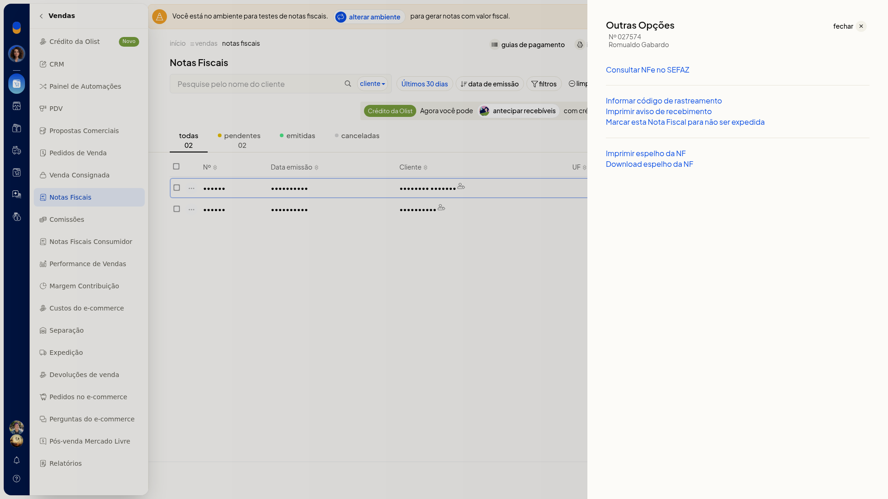
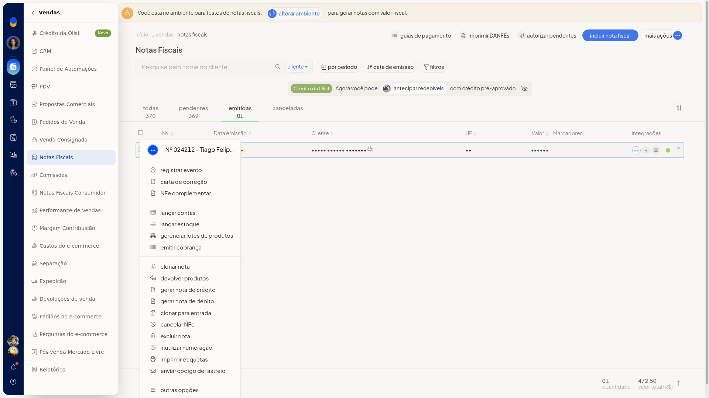
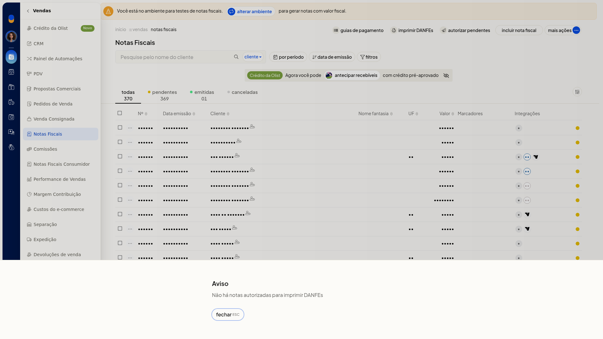
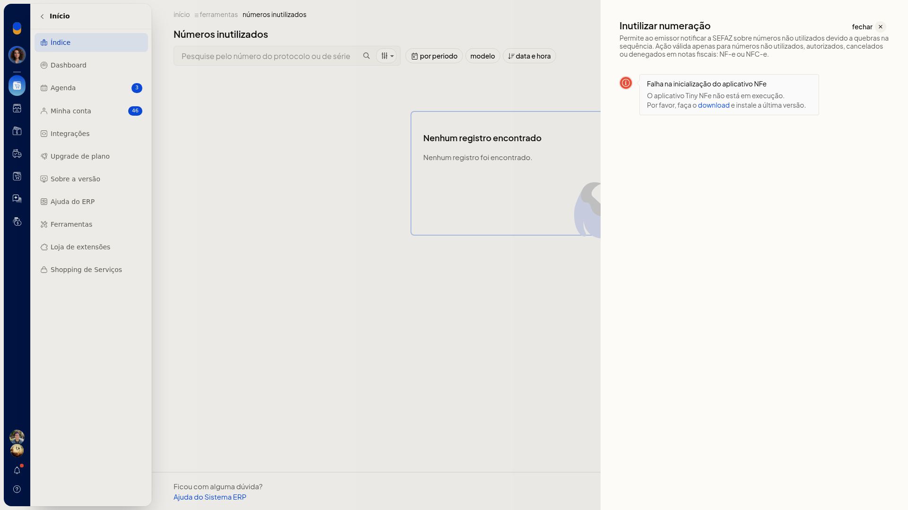
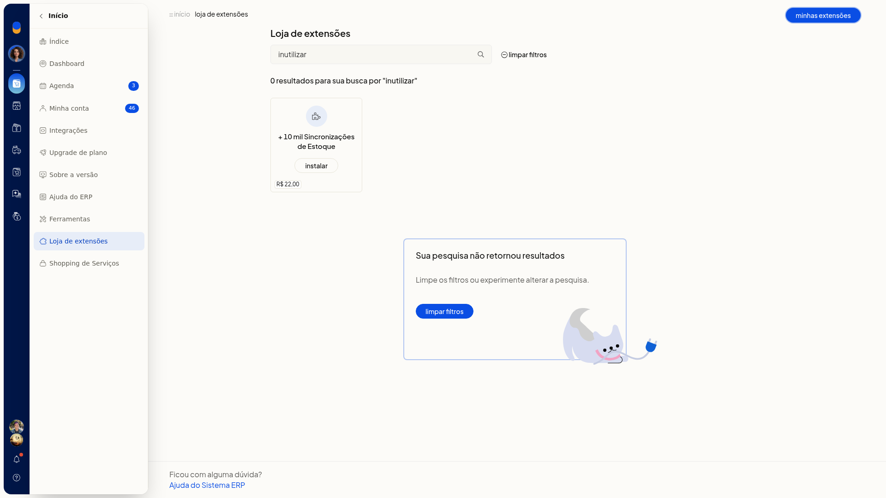
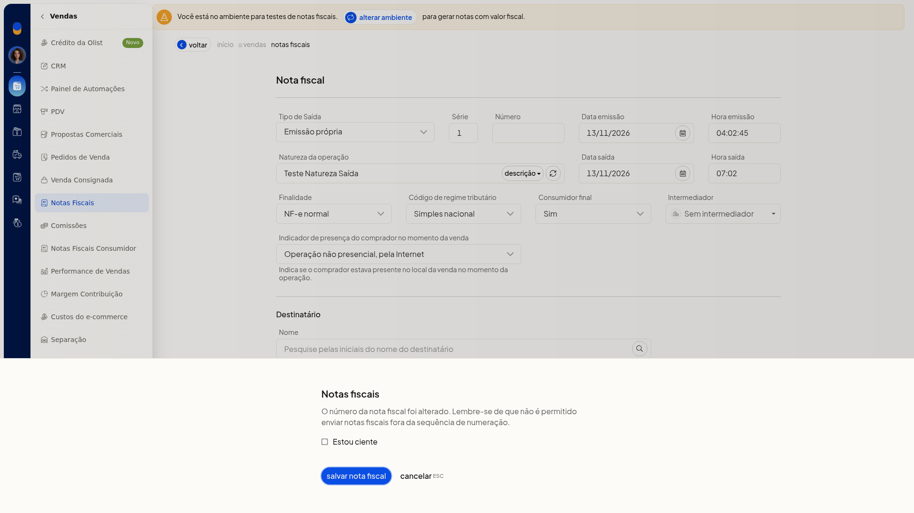
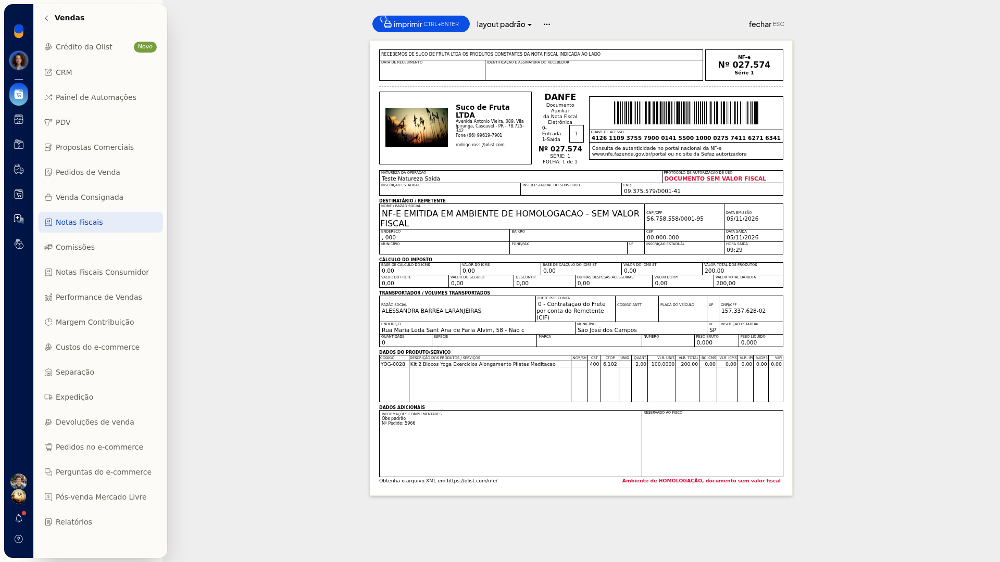

Problemas comuns na emissão de notas
Em Vendas > Notas Fiscais, no ERP da Olist, você consulta o motivo quando uma nota fica com problema e entende avisos que impedem imprimir DANFEs, lançar contas, inutilizar numeração ou seguir com a nota.
O painel da nota pendente ou rejeitada mostra os erros devolvidos pela SEFAZ. As situações abaixo são as que a própria tela explica.
Importante
- A justificativa de cancelamento, da carta de correção e do modo de contingência precisa ter no mínimo 15 caracteres.
- A carta de correção mais recente substitui a anterior.
- Não envie notas fora da sequência de numeração.
- Defensivos agrícolas e guia de trânsito não podem constar na mesma nota.
- Cancelar NFe, Carta de correção e Download do XML da NFe aparecem na nota emitida, não na pendente.
Instruções
Consultar a rejeição da nota
- Acesse Vendas > Notas Fiscais.
- Abra a nota pendente ou rejeitada e o painel de rejeição, quando ele existir.
- Leia os erros retornados pela SEFAZ. O painel traz o envio de email, com Enviar e Cancelar. Feche sem usar Enviar para sair sem reenviar a nota.
O menu da linha, Outras opções e o painel de rejeição não trazem a ação Corrigir com IA.
Nota pendente sem cancelar, carta de correção ou XML
-
Na lista, abra o menu de ações da nota pendente.

-
Abra Outras opções. Nessa nota, o menu não oferece XML, Cancelar NFe nem carta de correção.

-
Na nota emitida, use o menu da linha para Carta de correção e Cancelar NFe. O XML fica em Outras opções > Download do XML da NFe.


Impressão em lote sem nota autorizada
-
Em Vendas > Notas Fiscais, clique em Imprimir DANFEs ou abra Mais ações > Imprimir DANFEs autorizadas.
-
Se não houver nota autorizada, leia o aviso Não há notas autorizadas para imprimir DANFEs e feche. Nenhuma DANFE é impressa e você permanece na lista.

Lançar contas sem parcelas
-
No menu da linha, escolha Lançar contas. A opção aparece na nota pendente e na emitida.
-
Se não houver parcelas, leia o aviso Não existem parcelas cadastradas. O financeiro não pode ser integrado. Feche o aviso. Nenhuma conta é lançada.

Inutilizar numeração sem o serviço em execução
-
Em Vendas > Notas Fiscais, abra Mais ações e escolha Inutilizar numeração. A mesma opção aparece no menu da linha da nota pendente e da emitida.
-
Se a tela informar que o Tiny NFe não está em execução, não há formulário para preencher enquanto o serviço não estiver em execução. A consulta pode abrir com Nenhum registro encontrado. Feche sem inutilizar número.

A inutilização não é instalada em Início > Loja de extensões. A busca por Inutilização de NFe ou por inutilizar mostra Sua pesquisa não retornou resultados. Em Minhas extensões, a busca por Inutilização também não retorna item. O caminho é Vendas > Notas Fiscais > Mais ações > Inutilizar numeração.



Excluir nota e quebra de numeração
-
No menu da linha de uma nota pendente, escolha Excluir nota.
-
Leia o aviso: só notas pendentes podem ser excluídas, e excluir nota pendente ou rejeitada quebra a numeração. O diálogo traz o link para inutilizar numeração, excluir nota e cancelar. Clique em cancelar para manter a nota.

Número fora da sequência
-
Em Vendas > Notas Fiscais, clique em Incluir nota fiscal.
-
Mantenha o Número preenchido pelo sistema. Se você alterar o número, leia o aviso de que não é permitido enviar notas fora da sequência. Clique em Cancelar para dispensar o aviso.

Preview da DANFE sem valor fiscal
-
Na linha da nota, abra o menu de ações e escolha Imprimir DANFE.
-
No preview, confira o aviso de documento sem valor fiscal antes de usar Imprimir. Clique em Fechar se não for imprimir.

Resultado
Você vê o motivo devolvido pela SEFAZ e permanece na lista quando fecha os avisos de DANFE, parcelas, exclusão ou sequência. A inutilização só segue na tela de notas, com o Tiny NFe em execução.
Informações adicionais
- A busca NFe em Minhas extensões não mostra inutilização.